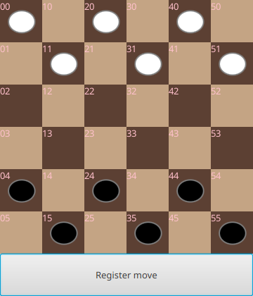
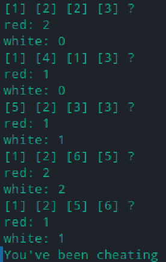
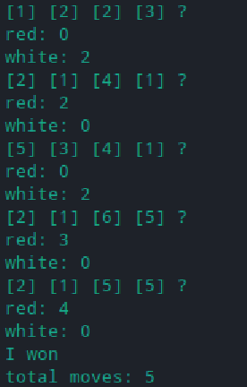
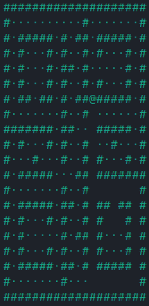
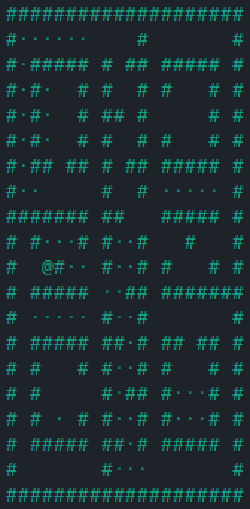

[user@user-web ~]$ Jestem studentem na Politechnice Wrocławskiej. Aktualnie studiuję równolegle dwa kierunki na I stopniu — Informatykę Algorytmiczną oraz Matematykę. Interesuje mnie wszystko, pod warunkiem że jest wystarczająco teoretyczne lub kreatywne; programowanie firmowe nie jest dla mnie. Lubię realizaować projekty programistyczne, które wymagają przemyślenia (optymalizacja algorytmu, uogólnianie problemu), zamiast wielogodzinnej walki z kompilatorem. W przeszłości zajmowałem się głównie rzeczami takimi jak: tworzenie muzyki, design gier komputerowych i pisarstwo. Aktualnie całą swoją uwagę skupiam na studiach — poszerzam wiedzę w zakresie wyżej wymieniowych dziedzin.
CZYM SIĘ ZAJMUJĘ?
[user@user-web ~]$ Moje zainteresowania dotyczą głównie matematyki teoretycznej oraz algorytmiki. Moje główne zainteresowania w zakresie matematyki dotyczą przede wszykim: teorii mnogości i jej pochodnych, algebry abstrakcyjnej, teorii grafów; natomiast najciekawsze dziedziny informatyczne według mnie to: teoria algorytmów (w tym optymalizacja), teoria baz danych, a także sztuczna inteligencja. Głównie programuje w językach programowania niższego poziomu, np. C++, Rust. Niemniej jednak w razie potrzeby piszę programy w Pythonie, Javie, lub mniejszych językach, np. Lua. W nieco mniejszym stopniu interesuję się także innymi dziedzinami, np. fizyką. Dodatkowo, w wolnym czasie lubię uczyć się nowych języków (znam język angielsi na poziomie C1, francuski na poziomie A2, oraz japoński na poziomie A1).
WYBRANE PROJEKTY
[user@user-web ~]$ Poniżej znajduje się kilka wybranych aplikacji, którymi zajmowałem się w czasie studiów, wraz z krótkim ich opisem. Więcej przykładów oraz szczegółów można znaleźć w wydzialonej zakładce.
Warcaby — aplikacja napisana w Javie w architekturze klient-serwer, pozwalająca dwóm graczom stoczyć potyczkę w warcabach. Ewentualnie, pojedynczy gracz może spróbować swoich sił przeciwko komputerowi.

Mastermind — gracz wymyśla kod złożony z 4 liczb, a komputer odgaduje hasło na podstawie pytań oraz odpowiedzi. Program napisany w języku C.


Pac-man — prosta aplikacja napisana w Bashu, dzięki której użytkownik może zagrać w minimalistyczną wersję gry Pac-man.


PLANY
[user@user-web ~]$ Obecnie posiadam duży nakład pracy na studiach i nie zamierzam podejmować dodatkowych działalności. Na ten moment planuję skupić się na nauce; W najbliższych latach chciałbym poznać o wiele więcej technik algorytmicznych oraz opanować podstawy matematyki teoretycznej, potrzebnej do nieco bardziej złożonej analizy algorytmów. Oprócz kursów czysto studenckich chciałbym dogłębniej poznać np. Rusta. Jeśli nadarzy się okazja, bardzo chętnie przestudiuje języki programowania takie jak Prolog, oraz dziedziny matematyki takie jak teoria grafów, funkcje zespolone, czy topologia ogólna.